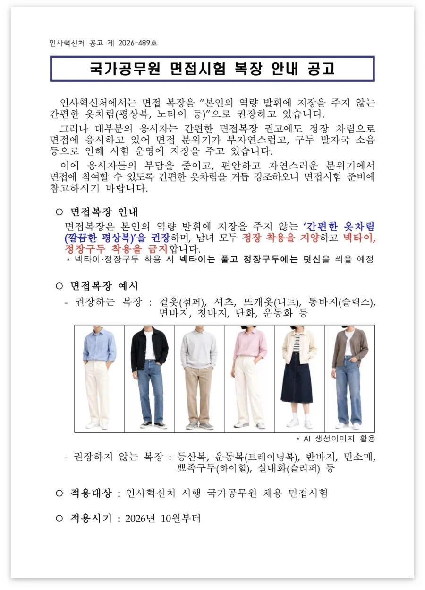
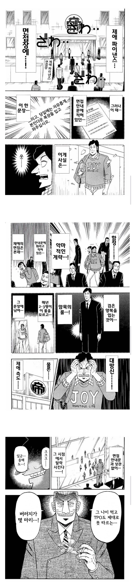

https://bbs.ruliweb.com/best/board/300143/read/76624908


===
면접때 자율복장이라 해서 편하게 입고가면
다른 지원자들은 다 양복 입고 왔던 기억이....
https://bbs.ruliweb.com/best/board/300143/read/76624908


===
면접때 자율복장이라 해서 편하게 입고가면
다른 지원자들은 다 양복 입고 왔던 기억이....
경직된 분위기가 싫으면 온라인 화상면접으로 하지
면접보러 가는 것도 일인데 ㅋㅋ
현대중공업 기술교육원 용접반 면접볼때 중공업 작업복입고 가서 프리패스함 ㅋㅋㅋㅋㅋ
넥타이만 풀면 됨 ㅋㅋㅋ
정답이다, 연금술사
구두는 덧신 씌운데
저새끼들은 존나 꽉막힌 새끼들이 존나 프리한척함?
역설적으로 꽉막혀서 프리를 억지로 주입해야하니까 저런게 나오는거임
원래 결손된걸 추구하는거야
진짜 프리했어봐라 자유복장이라하지
변복마술 바이럴이네
근데 이게 옳게 가는 과정인 거 같긴 해
진짜 웬만한 큰 거 아니면 요즘엔 다 세미정장이고 위에 블레이저 입는 정도니까
공직이 바뀌어야 민간도 바뀌는 경우도 많아서
면접 정장금지는 솔직히 별로인게
정장도 못살 사람들은 일상복이 더처참하단거임..
요즘 정장은 취준생들 빌려주는 곳도 많아서 ㅋㅋㅋ
중급닌자시험이네 ㅋㅋㅋ
공문 읽는 놈이 손해보는 병신 면접 ㅋㅋ
저게 좋다 싶으면서도... 정장은 오히려 생각 많이 할 필요 없이 사이즈만 맞으면 되고 없으면 무료 대여도 가능해서 접근성도 좋은듯
정장 외에 다른 복장 안된다고 하면 면접자에게 돈 쓰라고 강요하는 꼴이라 저런 식으로 말할 수 밖에 없음 ㅇㅇ
나 일본 회사서 저랬다. 표창받어서 본사 어디강당 같은데로 가고 사내방송 촬영도 있는데 사전안내 복장이 비지니스캐쥬얼.. 정장x라 원래 정장입고 다니는데 판교룩으로 갔더니 죄다 정장 넥타이에 회사 뺏지까지 하고 왔더라 ㅅㅂ... 여자중에 기모노같은거 입고온 아줌마도 있음 씨이이빨
순진해ㅋ 일본사회 몰라?
면접관으로서 면접 들어갈 때 사회초년생이 입고 온 정장에서 긍정적인 이미지를 받아본적이 거의 없어서...
저런 극약처방도 나쁘진 않은 듯
ㅋㅋㅋ 너무 루즈할거면 적당히 긴장한 모습이 낫긴하지..
그래도 정장을 입는 사람을 면접관들이 높게 평가할 거라
교토식 화법 : 그냥 편하게 입고오세요
비지니스캐주얼로 가야지 뭐… 어느쪽으로든 우겨서…
넥타이 금지니까 남자는 국밥 코디인
슬랙스에 셔츠+니트 조합이면 되겠네
나도 면접때 자유 라고있어서 캐쥬얼하게 갔더니 다른사람다 정장빡세게 입고왔더라.
결국 붙긴함
아니 뭔 옷을 입고오던 뭔 상관인데 ... 저런 식으로 지랄한데 ... ㅅㅂ
막말로 반바지에 슬리퍼 직직끌고 오면 면접관들 니놈들도 꼴보기 싫을거 아니냐?
나도 대학원 면접볼 때 나만 반바지 입고 옴 ㅋㅋㅋ
그냥 비즈니스 캐주얼 입고오란 거지 머
인혁처에서 지침 내렸는데도 정장입고 간다? ㅋㅋ
경쟁자들 개땡큐지
공무원 사회는 위에서 하라고 했으면 하는 시늉이라도 해야 함
예비역 현역 재임용 면접인데 면접온 사람들 막 정복입고 등장한다고ㅋㅋㅋㅋ 난 걍 흰티에 더블브레스트 셋업 신발도 페니로퍼 신고왔는데 죄다 정장에 넥타이까지하고 정복입고 나타나니까 내가 이상한놈 됨
근데 규정상 정복 못입지 않나???
전역직전에 재임용 신청한 사람도 있고 그래서 그럴거야 아마
아 그렇구나 예전에 잠시 재임용 생각한적 있었는데...
내가 결의대회에 편하게 입고 오라고 해서 진짜 편하게 전 직원들 다 있는데 추운 겨울이라 북극곰 옷 + 맨발 + 반팔 + 츄리닝 입고가서 개같이 욕먹었다
다른 사람들 전부 출근룩이더라…
정장구두에 덧신 씌울 예정이라니 ㅋㅋㅋ
권장이면 정장 입는거네
이딴식이니까 아직도 좆방직경쟁률 한자리지 ㅋㅋㅋㅋ 인사혁신처가아니라 인사안주처네
솔직히 말하면 저게 더 머리 아픔
걍 정장에 구두 이거면 끝날걸 더 깔끔한 코디, 면접관 눈에 확 들어올 코디 등등 생각해야할게 존나 더 많아짐
코레일 청자켓의 전설 모르나
검은 정장 속 홀로 툭 튀는 청량한 청자켓 입고 와서 미친 인싸력으로 면접장 박살내고 합격한 전설…
민방위훈련때 군복입고 오는놈들이 꼭 하나씩 있지
나 교사인데 정장안입고 면접(2차 시험) 봄.
일단 수업실연하는데 개불편해서 그냥 셔츠에 슬랙스입고함 20%정도는 노정장
수업실연 긴장 안됐어?
1차 결과 발표 후 2차 준비 기간 얼마 없지않아?
정장입지말라고 크게 박아놓은곳 면접갔는데 같이 면접본사람 말안듣고 정장입고왔다고 한소리 듣더라 ㅋㅋㅋ
난 200명중에 혼자 캐주얼 복장이였는데 16명 뽑는데서 뽑힘. 15년 전이고, it 아트계열이라 그랬던걸까
취준생 입장에선 저게 더 고민될듯
면접 정장 무료로 대여해 주는 곳들이 널린 지금, 정장을 금지해 버리면 고민거리가 새로 하나 추가되는 건데....
난 카고팬츠에 뉴발란스 티셔츠에 가죽자켓 입고갔는데 왜뽑힌거지
우린 인사면접때 정장 금지래서 걍 셔츠...
정장보다 평상복보면 사람 평소 성격이나 취향 보임
노타이 모나미들이 많아질예정